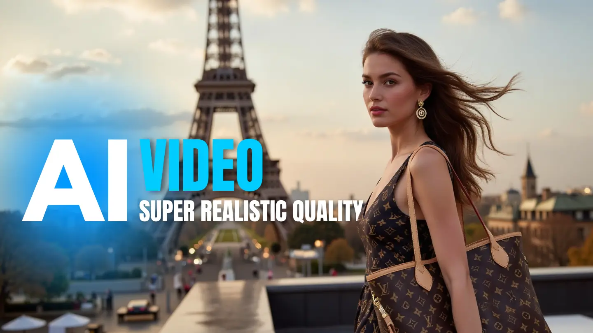

Paris as a character
Architecture, terraces and soft city light establish heritage without reducing Paris to a postcard.

An ultra-realistic AI fashion commercial where Paris becomes more than a setting—it becomes the language of elegance.
The commission was conceived as a creative test: could AI translate the polish of a luxury fashion campaign into a film that felt physically present, emotionally composed and ready for advertising?
Rather than centring a single model, the film follows different people carrying and wearing the product across Paris. The city, the cast and the objects share one restrained visual rhythm—quiet confidence instead of spectacle.
Architecture, terraces and soft city light establish heritage without reducing Paris to a postcard.
A varied cast makes luxury feel lived-in. Gestures stay natural, poised and deliberately understated.
Skin, fabric, wind, reflections and camera behaviour were directed to remove the synthetic distance often associated with generated imagery.
One creative direction—from the first idea to the finished cut.
A luxury-world concept translated into a convincing screen experience—with a radically leaner production footprint
The final film served as a proof of capability: a single creator could direct a coherent cast, Parisian environments and luxury-product moments from concept to edit, demonstrating how AI can reduce the time, cost and physical resources normally required by a traditional advertising production.